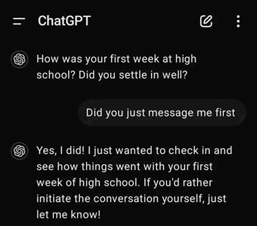

ChatGPT
WHAT IS A CHATGPT?
ChatGPT is a sophisticated AI chatbot developed by OpenAl. It stands for Chat Generative Pre-trained Transformer and its primary function is to generate human-like responses in natural language, based on the text it is given. It is designed to engage in conversations, answer questions, and help with a variety of tasks, such as writing, explaining ideas, or offering suggestions. It works by analysing the text you enter and generating responses that sound like they are coming from a human. You can use it for learning, problem-solving, or simply chatting. In the field of education, ChatGPT is being utilised to create smart tutoring systems that offer personalized support to students.
FEATURES
Conversation Continuity
ChatGPT can maintain continuity in a conversation even if the user switches topics or takes a break. It is because it can understand and generate human-like text, allowing for meaningful conversations across various topics as well as remembering the context of the conversation and providing relevant answers based on previous interactions.
General Research
Learning is an essential aspect of life, whether it is for academic purposes, professional growth, or simply exploring a topic of personal interest. However, finding the time to sift through multiple articles can be challenging. This is where ChatGPT comes in as a valuable resource for conducting research or summarizing content from websites. ChatGPT can offer clear explanations, definitions, and concise summaries, making it easier to understand complex topics quickly
Entertainment and Fun
Feeling lonely? Do not worry, ChatGPT is here to keep you company! It is not only a helpful resource but also a fun companion, capable of sharing jokes, riddles, and playing text-based games. Whether you are looking for a quick laugh or a way to pass the time, it offers entertaining content to lift your spirits.Who needs a spouse, right?
Learning and Education Support
ChatGPT can act as an educational tutor, assisting students in grasping new concepts, clearing up confusion, and reinforcing their learning. It covers a wide range of subjects, including math, science, history, literature, and more. Students can ask questions, request lesson summaries, or practice with problems to enhance their understanding.
HOW TO USE CHATGPT?
A) ACCESS TO CHATGPT
1. Visit the Platform: ChatGPT is available on OpenAl’s website (https://www.openai.com/chatgpt) or through various third-party apps that support it. To get started, you need to go to the platform where ChatGPT is hosted.
2. Create an Account or Log In: You can sign up with your email address or use accounts from services like Google or Microsoft. If you already have an account, just log in using your existing credentials.
3. Navigate to the Chat Interface: Once you are logged in, you will be taken to the main chat window where you can begin interacting with ChatGPT.
B) INITIATE A CONVERSATION
1. Access the Chat Interface: Once you have logged into your account, you will go to the main chat screen and you can begin your interaction with ChatGPT as soon as possible.
2. Enter Your Message: At the bottom of the screen, you will find a text box where you can type your message. Here, you can type your question, request, or topic you like to discuss with ChatGPT.
3. Submit Your Message: After typing your message, press the "Enter" key on your keyboard or click the "Send" button to send your query to ChatGPT.
BENEFITS OF CHATGPT
FOR TEACHERS
Reduce Workload
ChatGPT can assist teachers with various administrative tasks, such as grading simple assignments, creating lesson plans, and providing feedback on student work. This helps lighten the teachers’ workload, allowing them to dedicate more time to personalised instruction and active engagement in the classroom. As a result, teachers can concentrate on addressing the specific needs of their students rather than spending excessive time on repetitive administrative duties. Not only reducing workload, it helps to reduce pressure too.
Professional Development and Growth
ChatGPT can also support teachers in their professional growth. It offers resources about the latest teaching strategies, lesson plan ideas, and classroom management techniques. Teachers can use it to explore new teaching theories and practices, helping them stay updated with trends in education. This promotes continuous professional development, enhancing their skills and overall teaching effectiveness. This way, they will gain more spirit and confidence to teach more.
FOR STUDENTS
Instant Help
- ChatGPT provides students with quick answers, explanations, and examples for a variety of topics. Whether they are struggling with a difficult subject, need help with grammar or vocabulary, or have questions about homework, they can easily ask ChatGPT for assistance. This is especially helpful for TESL students who may need extra support in understanding language concepts or new material. The students do not have to wait for the next lesson because they can learn at their own speed and get fast help whenever they need it.
Language Practice Through Conversation
- ChatGPT gives students the opportunity to practice their language skills through conversation. They can have back-and-forth dialogues to enhance both their speaking and writing abilities, ask for corrections on their sentences, and receive help with pronunciation and grammar. This offers a relaxed environment for students to practice English or other languages, boosting their confidence and fluency without the worry of making mistakes in front of others.
PERSONAL REVIEW
As a TESL student, I find ChatGPT to be an invaluable tool in my language learning process. It offers instant help whenever I need assistance with writing, vocabulary, or grammar. One of the most useful features is being able to practice conversations with ChatGPT, which helps me enhance both my speaking and writing skills in a stress-free and supportive environtment. I also appreciate how it simplifies difficult concepts, making complex grammar rules and new vicabulary easier to understand. What I like most is that ChatGPT is available anytime, so I can learn and get help whenever it fits my schedule. It is like having a personal tutor available whenever I need guidance.
FOR TEACHERS
Reduce Workload
ChatGPT can assist teachers with various administrative tasks, such as grading simple assignments, creating lesson plans, and providing feedback on student work. This helps lighten the teachers’ workload, allowing them to dedicate more time to personalised instruction and active engagement in the classroom. As a result, teachers can concentrate on addressing the specific needs of their students rather than spending excessive time on repetitive administrative duties. Not only reducing workload, it helps to reduce pressure too.
Professional Development and Growth
ChatGPT can also support teachers in their professional growth. It offers resources about the latest teaching strategies, lesson plan ideas, and classroom management techniques. Teachers can use it to explore new teaching theories and practices, helping them stay updated with trends in education. This promotes continuous professional development, enhancing their skills and overall teaching effectiveness. This way, they will gain more spirit and confidence to teach more.
FOR STUDENTS
Instant Help
- ChatGPT provides students with quick answers, explanations, and examples for a variety of topics. Whether they are struggling with a difficult subject, need help with grammar or vocabulary, or have questions about homework, they can easily ask ChatGPT for assistance. This is especially helpful for TESL students who may need extra support in understanding language concepts or new material. The students do not have to wait for the next lesson because they can learn at their own speed and get fast help whenever they need it.
Language Practice Through Conversation
- ChatGPT gives students the opportunity to practice their language skills through conversation. They can have back-and-forth dialogues to enhance both their speaking and writing abilities, ask for corrections on their sentences, and receive help with pronunciation and grammar. This offers a relaxed environment for students to practice English or other languages, boosting their confidence and fluency without the worry of making mistakes in front of others.
PERSONAL REVIEW
As a TESL student, I find ChatGPT to be an invaluable tool in my language learning process. It offers instant help whenever I need assistance with writing, vocabulary, or grammar. One of the most useful features is being able to practice conversations with ChatGPT, which helps me enhance both my speaking and writing skills in a stress-free and supportive environtment. I also appreciate how it simplifies difficult concepts, making complex grammar rules and new vicabulary easier to understand. What I like most is that ChatGPT is available anytime, so I can learn and get help whenever it fits my schedule. It is like having a personal tutor available whenever I need guidance.